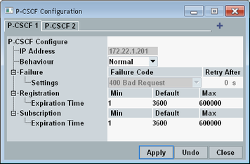

Press the "P-CSCF" hotkey to open the "P-CSCF Configuration" dialog box.
It configures the P-CSCFs simulated by the internal IMS server.
You can create up to 10 P-CSCF profiles with different IP addresses and properties. Each profile is displayed on a separate tab.
Profile 1 and 2 are always available. To create profile 3 to 10, option R&S CMW-KAA21 is required.

A list of all P-CSCFs is sent to the DUT. The DUT selects a P-CSCF from the list for registration.
A possible use case is to configure P-CSCF 1 and 2 so that they reject the registration and P-CSCF 3 and 4 so that they accept the registration. Then check whether the DUT retries registration with another P-CSCF.
The settings are explained in the following.
 creates a tab / P-CSCF. The maximum number of tabs is 10.
creates a tab / P-CSCF. The maximum number of tabs is 10.
 deletes the currently selected tab. Tab 1 and 2 cannot be deleted.
deletes the currently selected tab. Tab 1 and 2 cannot be deleted.
Defines the IP address of the P-CSCF. You can specify an IPv4 or an IPv6 address. Assign a different address to each profile.
The addresses of profile 1 and 2 are fixed. Profile 1 uses the IPv4 address of the DAU, profile 2 the IPv6 address.
Remote command:Defines the behavior of the P-CSCF when it receives a SIP message from the DUT.
"Normal" | The P-CSCF follows the normal call flow. For example, it performs a registration when it receives a REGISTER message. |
"Failure" | The P-CSCF returns the configured failure code. |
Selects a failure code to be returned to the DUT for "Behavior" = "Failure".
Some failure messages support the header field "Retry After". It is filled with the configured time.
Remote command:Defines a minimum, maximum and default value for the registration expiration time (duration of the registration).
- If the DUT does not include an expiration interval in its REGISTER message, the configured "Default" value is used as expiration time for the registration.
- If the DUT suggests an expiration interval in its REGISTER message:
– If the suggested value is between the configured "Min" and "Max" value, the suggested value is used as expiration time. – If the suggested value is outside of the configured "Min" / "Max" range, the registration is rejected.
Defines a minimum, maximum and default value for the subscription expiration time.
The logic is the same as for "Registration", with SUBSCRIBE messages instead of REGISTER messages.
Remote command:"Apply" applies all changes.
"Undo" discards all not yet applied changes.
"Close" closes the dialog box. Not yet applied changes are discarded.